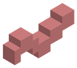
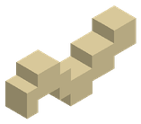
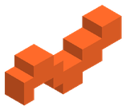
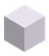
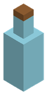
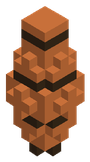

Pesca Lanza la caña manteniendo el clic para cargar el lance, espera la picada y gana el forcejeo manteniendo la tensión dentro de la zona buena.
La picada tarda unos 12 s. Pican antes con lluvia (+40 %) y en las horas doradas (+30 %): de 5:00 a 8:00 y de 17:00 a 20:00. Hay un 5 % de sacar un tesoro y un 8 % de sacar chatarra.
Cañas Cebos 
Lombriz de Tierra
Larva Dulce de Junco
Larva de Salamandra de Magma
Salen al picar bloques: Lombriz de Tierra en Tierra (5 %), Lombriz de Tierra en Tierra (4 %), Larva Dulce de Junco en Pasto submarino (25 %), Larva Dulce de Junco en Fibra vegetal (2 %), Larva de Salamandra de Magma en Roca fundida (15 %).
Peces Pez Zona Biomas Fuerza Agilidad Prof. mínima Requisitos XP 1 Río 70 0,25 1 4 1 Llanura , Río 70 0,25 1 4 1 Bosque 70 0,25 1 4 1 Playa 70 0,25 1 4 1 Playa 70 0,15 1 4 1 Pradera Floral 70 0,25 1 4 1 Arboleda de Otoño 70 0,25 1 4 2 Océano 160 0,4 2 10 2 Océano 160 0,4 2 10 2 Océano 160 0,4 2 10 2 Océano 160 0,4 3 10 2 Pantano 160 0,4 1 10 2 Pantano 160 0,4 2 10 2 Montaña 160 0,4 1 10 2 Taiga de Pinos 160 0,4 1 10 2 Cañón de Arcilla 160 0,4 1 10 3 Selva 320 0,65 1 25 3 Selva 450 0,5 3 25 3 Desierto , Oasis Místico 320 0,5 3 25 3 Océano Profundo 320 0,5 4 cebo: Trocitos de Carne 25 3 Océano Profundo 320 0,5 20 cebo: Cebo Luminiscente de Esporita 25 3 Océano Profundo 320 0,5 8 25 3 Tierras nevadas 320 0,5 1 25 3 Selva de Manglares 320 0,5 1 25 4 Bosque de Hongos Gigantes 520 0,6 1 60 4 Glaciares de Hielo Azul 520 0,6 1 60 4 Picos Volcánicos 520 0,6 1 cebo: Larva de Salamandra de Magma · en lava 60 4 Bosque Umbrío 520 0,6 1 60 4 Oasis Místico 520 0,6 2 60 4 Cumbres Nubosas 520 0,6 1 60 5 Ciénaga Tóxica 800 0,72 1 140 5 Páramo de Ceniza 800 0,72 1 140 5 Selva Primordial 800 0,72 1 140 5 Yermo Helado Estigio 800 0,72 1 140 5 Bosque de Espigas de Cristal 800 0,72 1 140 5 Fosa Abisal 1100 0,72 20 cebo: Cebo Luminiscente de Esporita 140 5 Páramo de la Corrupción 800 0,72 1 140 6 Bosque Celestial 1250 0,85 1 300 6 Núcleo Ígneo 1250 0,85 1 cebo: Larva de Salamandra de Magma · en lava 300 6 Grieta del Vacío 1250 0,85 1 cebo: Gusano del Vacío Estelar 300 6 Cumbres de la Tormenta Eterna 1250 0,85 1 300 6 El Borde del Mundo 1600 0,95 3 300
Tesoros y chatarra Tesoros: ×2 ×2 
Perla marina rara
Mensaje en Botella
Ánfora Antigua
Chatarra:
Wiki generada a partir de los datos del juego (mods/) el 03/10/2026. Cube Unbound está en desarrollo: los valores pueden cambiar.
 Caña de Sauce y Ámbar
Caña de Sauce y Ámbar Caña de Bambú y Estaño
Caña de Bambú y Estaño Caña Reforzada de Hierro
Caña Reforzada de Hierro Caña de Plata Marina
Caña de Plata Marina Caña de Titanio y Nácar
Caña de Titanio y Nácar Caña Rúnica de Mithril
Caña Rúnica de Mithril Caña de Adamantio y Lava
Caña de Adamantio y Lava Caña Cósmica del Vacío
Caña Cósmica del Vacío Cebo Luminiscente de Esporita
Cebo Luminiscente de Esporita  Trocitos de Carne
Trocitos de Carne  Gusano del Vacío Estelar
Gusano del Vacío Estelar Trucha de Arroyo
Trucha de Arroyo Carpa Dorada
Carpa Dorada Perca de Sauce
Perca de Sauce Lubina Rayada de Playa
Lubina Rayada de Playa Cangrejo Azul Costero
Cangrejo Azul Costero Tetra Primavera
Tetra Primavera Barbo de Otoño
Barbo de Otoño Pez Payaso Tropical
Pez Payaso Tropical Cirujano Azul Real
Cirujano Azul Real Cirujano Amarillo
Cirujano Amarillo Pez Ángel de Coral
Pez Ángel de Coral Siluro del Fango
Siluro del Fango Anguila de Azufre
Anguila de Azufre Salmón Plateado de Altura
Salmón Plateado de Altura Trucha de Pino de Taiga
Trucha de Pino de Taiga Pez Lagarto de Arcilla
Pez Lagarto de Arcilla Piraña Roja de la Selva
Piraña Roja de la Selva Arapaima Gigante
Arapaima Gigante Pez Espada Dorado
Pez Espada Dorado Tiburón Leopardo de Arrecife
Tiburón Leopardo de Arrecife Rape Abisal de Linterna
Rape Abisal de Linterna Calamar Gigante de Tinta
Calamar Gigante de Tinta Bacalao Glacial Milenario
Bacalao Glacial Milenario Sábalo de los Manglares
Sábalo de los Manglares Pez Hongo Bioluminiscente
Pez Hongo Bioluminiscente Pez Aguja de Hielo Azul
Pez Aguja de Hielo Azul Sardina de Lava de Basalto
Sardina de Lava de Basalto Pez Sombra del Ocaso
Pez Sombra del Ocaso Dorado del Espejismo
Dorado del Espejismo Pez Volador de las Nubes
Pez Volador de las Nubes Anguila Corrosiva de Vitriolo
Anguila Corrosiva de Vitriolo Pez Carbonizado de Ceniza
Pez Carbonizado de Ceniza Piraña Prehistórica Acorazada
Piraña Prehistórica Acorazada Pez Fantasma Estigio
Pez Fantasma Estigio Pez Cristal Resonante
Pez Cristal Resonante Calamar Colosal del Leviatán
Calamar Colosal del Leviatán Pez Sangre de Hierro
Pez Sangre de Hierro Raya Astral del Firmamento
Raya Astral del Firmamento Pez Magma Primigenio
Pez Magma Primigenio Anguila del Vórtice del Vacío
Anguila del Vórtice del Vacío Pez Relámpago de Tormentita
Pez Relámpago de Tormentita Pez Alfa del Génesis
Pez Alfa del Génesis Lingote de oro ×2,
Lingote de oro ×2,  Lingote de plata ×2,
Lingote de plata ×2,  Esmeralda,
Esmeralda,  Perla abisal
Perla abisal Bota Vieja de Cuero,
Bota Vieja de Cuero,  Alga marina,
Alga marina,  Palo
Palo